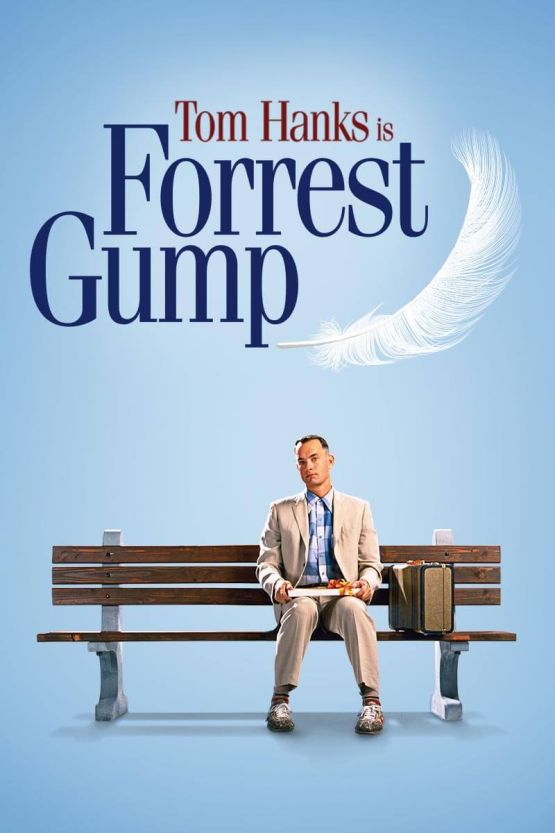

Destaques de Drama
À Espera de um Milagre
Gênero: Drama / Fantasia
Lançamento: 1999
Assistir trailer
Nota: ⭐⭐⭐⭐⭐⭐⭐⭐⭐⭐ (10/10)
Em 1935, Paul Edgecomb é o chefe de guarda do corredor da morte de uma prisão, onde conhece John Coffey, um prisioneiro gigante condenado pelo assassinato de duas meninas. Coffey possui um temperamento dócil e um dom sobrenatural de cura que desafia a lógica, levando Paul a questionar a culpa do prisioneiro. A relação que se desenvolve entre os guardas e John Coffey revela uma história profunda sobre fé, compaixão e as injustiças do sistema judiciário, culminando em uma jornada emocional que marca a vida de todos os envolvidos para sempre.
O Pianista
Gênero: Drama / Guerra
Lançamento: 2002
Assistir trailer
Nota: ⭐⭐⭐⭐⭐⭐⭐⭐⭐☆ (9/10)
Wladyslaw Szpilman é um pianista polonês judeu que vê seu mundo desmoronar com a invasão nazista na Polônia durante a Segunda Guerra Mundial. Após ser separado de sua família e forçado a viver no Gueto de Varsóvia, ele consegue escapar e passa a se esconder nas ruínas da cidade devastada. Sobrevivendo ao frio, à fome e ao isolamento, Szpilman encontra na música sua força para continuar. O filme narra sua luta desesperada pela sobrevivência e o encontro improvável com um oficial alemão que, tocado pelo talento do músico, decide ajudá-lo nos últimos dias do conflito.
Clube da Luta

Gênero: Drama / Suspense
Lançamento: 1999
Assistir trailer
Nota: ⭐⭐⭐⭐⭐⭐⭐⭐⭐☆ (9/10)
Um executivo insone e desiludido com o consumismo moderno conhece Tyler Durden, um vendedor de sabão carismático e rebelde com uma filosofia de vida radical. Juntos, eles criam o Clube da Luta, um grupo secreto onde homens se enfrentam fisicamente para extravasar suas frustrações e sentir-se vivos. O clube rapidamente se expande, transformando-se em uma organização anárquica perigosa conhecida como Projeto Mayhem. Enquanto a linha entre a sanidade e o caos se dissolve, o protagonista se vê preso em um labirinto psicológico que questiona a identidade e as bases da sociedade contemporânea.
Forrest Gump

Gênero: Drama / Romance
Lançamento: 1994
Assistir trailer
Nota: ⭐⭐⭐⭐⭐⭐⭐⭐⭐⭐ (10/10)
Mesmo com um raciocínio lento, Forrest Gump nunca se sentiu limitado e, graças ao apoio de sua mãe, levou uma vida extraordinária. Sentado em um banco de praça, ele narra sua trajetória, que o levou a participar de momentos cruciais da história dos Estados Unidos, como a Guerra do Vietnã e o movimento hippie, conhecendo figuras históricas pelo caminho. Apesar de suas conquistas como atleta e herói de guerra, seu coração permanece fiel ao seu amor de infância, Jenny. Forrest prova que a simplicidade e a bondade podem transformar o mundo, vivendo uma jornada repleta de otimismo e descobertas.
A Teoria de Tudo
Gênero: Drama / Biografia
Lançamento: 2014
Assistir trailer
Nota: ⭐⭐⭐⭐⭐⭐⭐⭐☆☆ (8/10)
O filme retrata a vida de Stephen Hawking, um jovem astrofísico brilhante que faz descobertas importantes sobre o tempo e o universo enquanto estuda em Cambridge. Aos 21 anos, ele descobre que sofre de uma doença motora degenerativa que limitará seus movimentos e sua fala, mas encontra força no amor de sua colega Jane Wilde. Juntos, eles enfrentam os desafios impostos pela saúde de Stephen, enquanto ele se torna um dos cientistas mais renomados da história. É uma história inspiradora sobre a persistência da mente humana frente às limitações do corpo e a complexidade das relações diante das adversidades da vida.